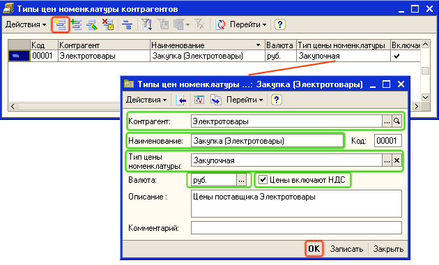
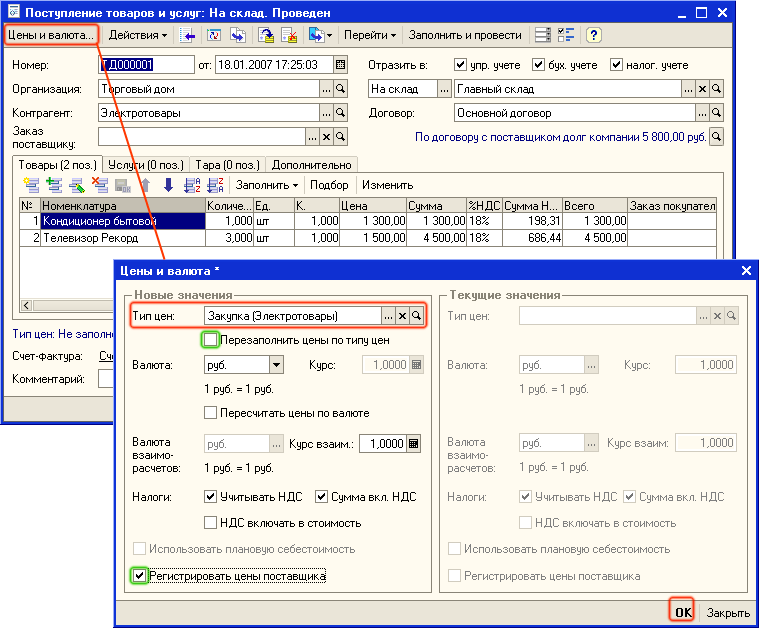
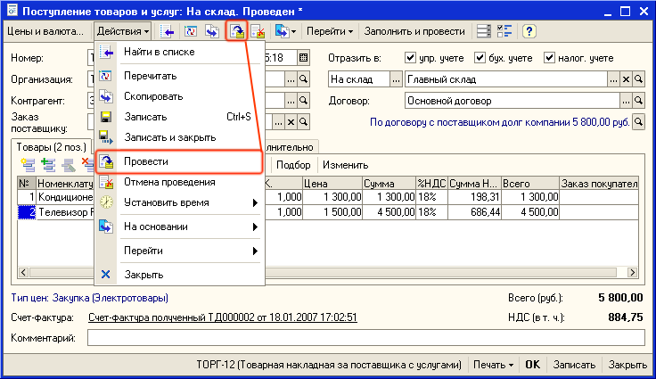
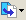
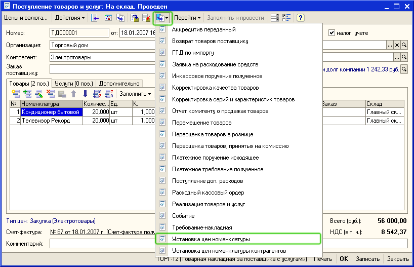
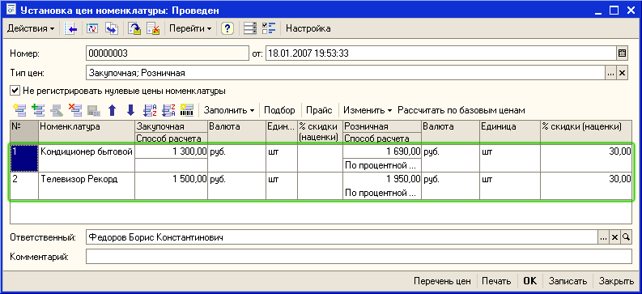

При поставке товаров поставщик Электротовары изменил цены по сравнению введенными ранее закупочными ценами. Необходимо теперь изменить цены продажи (розничные и оптовые) в соответствии с новыми ценами поставщика.
1. Для поставщика необходимо зарегистрировать тип цен номенклатуры контрагента (название цены поставщика). Типы цен поставщиков хранятся в справочнике Типы цен номенклатуры контрагентов. Справочник вызывается из пункта меню Справочник - Номенклатура - Типы цен номенклатуры контрагентов. Для ввода новой записи в справочник нажмите кнопку  (или нажмите клавишу Insert или выберите меню Действия — Добавить). Заполните информацию в справочнике так, как показано на рисунке:
(или нажмите клавишу Insert или выберите меню Действия — Добавить). Заполните информацию в справочнике так, как показано на рисунке:

Нажмите на кнопку ОК. Информация о названии цены поставщика будет зарегистрирована в информационной базе.
Важно.
Указание типа цен номенклатуры необходимо для того, чтобы затем сформировать цены продажи! Не забудьте выбрать это значение из справочника Типы цен номенклатуры.
2. Откройте ранее сформированный документ поставки от поставщика Электротовары. Для этого, находясь в списке документов поступления нажмите на кнопку  (или нажмите кнопку F4 , или выберите пункт меню Действие - Изменить).
(или нажмите кнопку F4 , или выберите пункт меню Действие - Изменить).
3. В форме документа Поступление товаров и услуг нажмите на кнопку Цены и валюта. Установите тип цен поставщика и флаг Регистрировать цены поставщика, так как это показано на рисунке:

Внимание.
Флаг Перезаполнить цены по типу цен не должен быть установлен! Иначе цены в документе поступления обнулятся, поскольку они еще не зарегистрированы.
4. Нажмите на кнопку ОК в диалоговом окне Цены и валюта.
5. Проведите документ Поступление товаров и услуг, но не закрывайте его. Для проведения документа нажмите на кнопку  (или выберите пункт меню Действия - Провести), так как это показано на рисунке:
(или выберите пункт меню Действия - Провести), так как это показано на рисунке:

6. Введите на основании документа Поступление товаров и услуг документ Установка цен номенклатуры. Для ввода на основании используйте кнопку  (или пункт меню Действия - На основании) так, как это показано на рисунке:

Откроется новый документ Установка цен номенклатуры с заполненными значениями новых закупочных и розничных цен. Проведите документ, нажав на кнопку ОК. Будут зарегистрированы новые цены продажи.

Примечание.
В нашем примере оптовые цены рассчитываются динамически на основании розничных цен, поэтому дополнительно их регистрировать не надо.
Теперь Вы научились формировать новые цены продажи в том случае, если поставщик изменил цены. Из следующего раздела Вы узнаете как оформить оплату поставщику.